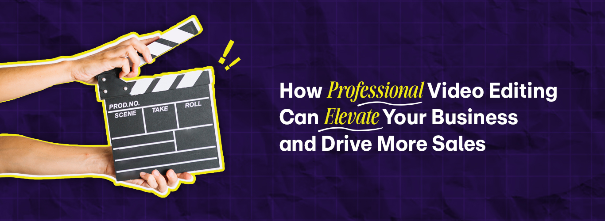

© Copyright 2022 © All Right Reserved.

Just imagine you’ve spent hours crafting a video promoting your brand. You keep the message very crisp and clear while keeping the visuals visually appealing and still, it fails to create an everlasting experience. Did you wonder what went wrong? In most cases, it’s not the idea but the actual execution. In today’s time and digital era, where videos conquer the internet, simply having basic video content isn’t enough. When it comes to the video that blends into the background while one that grabs attention lies in skilled video editing. Therefore, partnering with professional video editing experts or onboarding high-quality video editing support is essential to help transform basic footage into a professional video that intrigues the audience and brings growth. Professional video editing is a force that takes your business and sales to a higher level.
It is crucial to understand why professional video editing matters in today’s digital world, as it has become the most powerful tool for marketing and brand awareness and audience engagement. Well, just creating videos isn’t enough. There’s a study highlighted in an article by marcosandmotionstudio that 86% of businesses use video as a marketing tool, but only a fraction invest in professional editing solutions. The results? Many businesses miss the opportunity to make a memorable impact. High-quality video editing is the secret sauce to turning a basic video into a masterpiece with a clear, influential and memorable experience. Let’s have a look at why video editing truly matters.
Creating a strong first impression plays an important role in building a strong first impression as your video is the first interaction potential customers form with your brand. A skillfully edited video with smooth transitions, pleasing visuals and catchy music gains immediate credibility. This truly shows the audience that you believe in quality and understand the power of presentation.
All the brands have a story to tell, and influential storytelling is the bridge between the brand and the audience. Expert editors use skills such as color grading, motion graphics and sound design to make the story resonate and connect with the audience. Personalized video editing services ensure consistency and impact, whether it's a brand’s story, testimonials, videos, etc.
The attention span of the audience is becoming shorter over time. The expert video editors trim the videos and help maintain a magnetic pace that keeps the viewers engaged. The dynamic animations, text overlays and sound effects add an interactive feel to the video that keeps the viewers stuck to the screen.
The videos have unique CTA’s, clear cuts and a message that inspires and connects with the audience emotionally. Studies show that businesses that use video marketing experience 34% higher conversion rates. The creative video editing services keep their sales tactics and storytelling balanced.
To improve SEO and Online Visibility, the videos are optimized for SEO to appear higher in search results. The skilled editors incorporate keywords, metadata and captions to make videos easier to look at, resulting in increased organic traffic to the brand.
In this digital era, high-quality video editing is not just a creative but a choice and a strategic investment. Establishing your brand’s image to gain engagement and drive sales, a well-edited video can be a game-changer. Various key aspects make video editing crucial for business growth.
| Key Aspects | Why It Matters | How It Drives Sales |
|---|---|---|
| Enhances Brand Image | Brand image is reflected by high-quality videos as it indicates professionalism and builds trust with the audience. |
When a brand image is strong, it results in increased
customer loyalty and high conversion rates.
Source: Forbes |
| Increased Engagement | Engaging videos help grab the audience’s attention and boost engagement and interaction. |
If the engagement is higher, it will lead to more shares,
more reach and building a potential customer base.
Source: SEMrush |
| Improves SEO Performance | A great video can help boost the website’s SEO, which makes it more discoverable. |
Enhanced SEO results in high organic traffic and potential
sales.
Source: SEMrush |
| Effective Storytelling | It’s an effective way of conveying a story through well-edited videos. |
A well-edited video with effective storytelling can relate
with viewers, which influences their purchasing decisions
and behaviour.
Source: SEMrush |
| Higher Conversion Rates | Well-edited videos can showcase products effectively, leading to informed decisions. |
Products with clear demonstrations can lessen hesitation,
leading to higher sales.
Source: Forbes |
The businesses are prioritizing professional video editing solutions and high-quality video marketing that’s currently gaining a competitive advantage by high audience engagement, strong brand identity and increased conversions. However, just creating videos isn’t enough. The whole purpose of creating videos and expert editing is producing strategic, visually appealing and skillfully edited content that fascinates viewers and brings results. Skilled video editing transforms a basic video clip into a high-quality masterpiece that leaves a lasting impact. To make video marketing more impactful, an article by Forbes highlights nine proven ways to enhance videos into sales-boosting powerhouses.
You know that a successful video never tries to please the audience; instead, it targets the right one. That is why it is important to specify your ideal viewers, try to understand their pain points and create content that speaks directly to the audience’s needs and interests.
The blurry visuals, poor lighting and poorly written copy can ruin great ideas. That is why investing in a professional camera, lighting and skilled editing transforms your video from amateur to captivating.
The audience’s attention span is getting shorter day-by-day, so every second counts. A thrilling, fast-paced video that contains a precise message with busy visuals will keep them on the edge until the end.
The statistics, numbers and facts may provide an overview, but the stories sell. Audience connects with emotions so creating a video with an impactful story makes the brand more relatable and memorable.
If your video is not ranked at the top of the webpage, it means that it doesn't exist to most people. Therefore, using SEO friendly headings, descriptions and keywords is very necessary to reach the right audience at the right time.
The audio selection plays a huge role in any video along with the sound effects. If the video’s audio is unclear, the audience will click away. So invest in high-quality mics, noise reduction and goof equipment to keep them engaged.
If you want more clicks, sales or followers, you need to spell it out! A clear Call-to-action conveys to the viewers what exactly to do. Whether it comes to subscribing, visiting the page or following, etc.
The key to better videos is all about tracking their performance, including analyzing watch times, engagement rates and conversions to refine the content strategy for a greater impact.
From choosing music to color schemes, every detail of the video should scream your brand. Just keep a uniform look, feel and tone among all the content as it builds trust and brand reputation.
It’s high time you don’t let your brand fade into the background with poor content. Therefore, investing in advanced video editing services is greater than an aesthetic upgrade, it’s a strategic decision that brings real business results.
If you want to create impactful and high-quality videos that fascinate and transform, then consider collaborating with expert video editing services. So turn your raw footage into a captivating story that sets you apart from the competition.
A story is the heart of every memorable brand that’s told with passion and precision. With Glocal Assist services, you’ll not only grab attention but also build everlasting trust and loyalty among the audience. Let us transform your captured moment into a masterpiece that drives engagement, boosts conversions and leaves a lasting impression.
Take the next step: Contact us today at GlocalEdit or +1(732) 344 4268 and let’s craft your brand’s next success story.
© Copyright 2022 © All Right Reserved.